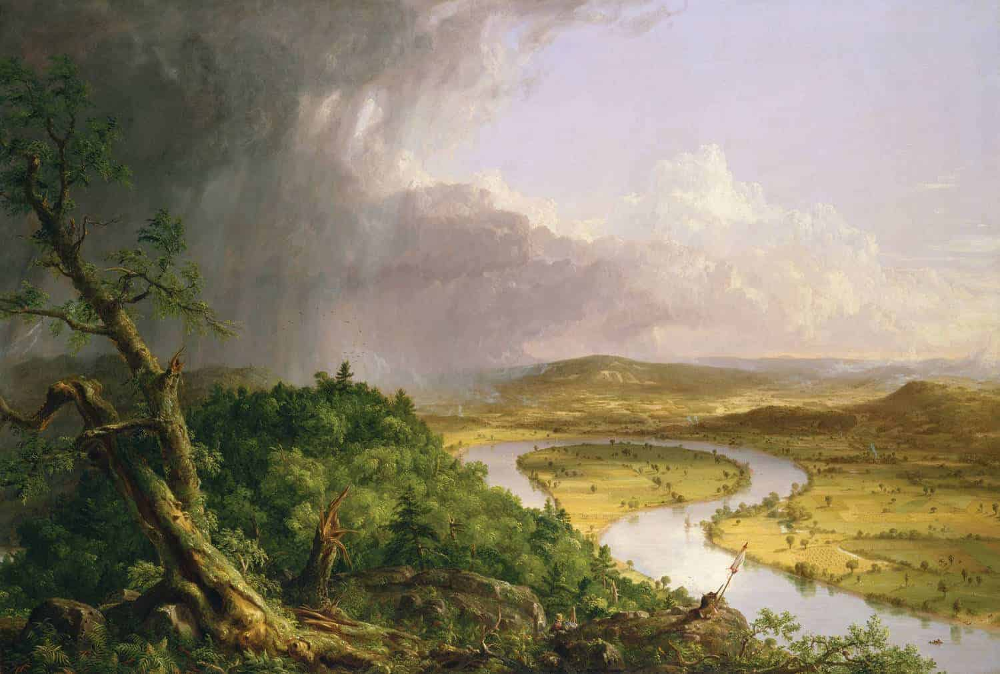

In contemporary times people feel isolated from their communities and feel as though they are fighting through these tough times individually. With the current pandemic forcing individuals to stay isolated from their regular routines and with all of the current social agitation, we can feel very alone. Through literature and academic studies, we can gain insight into past communities who struggled through similar events and realize we are joining others. Many of today’s social upheavals began in the Romantic era. We can see past individuals fighting for what they believe in and removing stigmas that we are still fighting today. Finding connections to communities in the past can remove the feeling of isolation that has been so forced on us in recent times. Here you can find quotes from Romantic era writings alongside contemporary quotes discussing similar issues to illustrate the community that literature brings. You can see the juxtaposition and similarities of the past and present through the sliding images.
Then:
“The most perfect education,...to enable the individual to attain such habits of virtue as will render it independent.” (Wollstonecraft 144)
“Strengthen the female mind by enlarging it, and there will be an end to blind obedience; but, as blind obedience is ever sought for by power, tyrants and sensualists are in the right when they endeavour to keep women in the dark, because the former only want slaves, and the latter a play-thing.” (Wollstonecraft 146)
“Men, indeed, appear to me to act in a very unphilosophical manner, when they try to secure the good conduct of women by attempting to keep them always in a state of childhood.” (Wollstonecraft 143)
“men endeavour to sink us still lower, merely to render us alluring objects for a moment; and women, intoxicated by the adoration which men, under the influence of their senses, pay them, do not seek to obtain a durable interest in their hearts, or to become the friends of the fellow creatures who find amusement in their society.” (Wollstonecraft 140)
Now:
“Real change happens when we invest in girls. Every year, millions of girls are denied an education at a time when it has the power to transform their lives and the world around them. If a girl is able to make it through primary and secondary education, it can help them break the cycle of poverty and it can help put a stop to early and forced marriage.” (Philanthropy Age)
“We are bombarded with hypersexualized images of females, so much so that most of us don’t even notice them. They are all around us like the air we breathe; messages so blatant, they become invisible, encouraging the normalization of female objectification.” (Duske)
“#MeToo is building a rich critique of freedom under conditions of inequality, a neglected topic...Sexual harassment encompasses, parallels, evokes, or echoes many other abuses of women and children, from simple discrimination to other abuses of authority or trust or power.” (MacKinnon)
Despite centuries of women’s rights movements and support it remains a current issue which many individuals suffer the consequences of. There remain women and men who feel isolated by the current attitudes towards feminists and are constantly ignored or put down. All people that feel the repercussions of gender inequality can find friends in this isolating experience by reading literature such as Mary Wollestonecraft’s A Vindication of the Rights of Women. Activists can be supported by the knowledge that they are continuing the fight that Wollestonecraft fought for centuries before. Reading how she had to fight for her rights despite the increasingly more difficult environment in that period can inspire people today with a unity to this previous activist. This unity can encourage this movement despite the constant dismissal and disregard. Feeling united to someone in a completely different era establishes how immense the movement is and can fight the isolation that many current activists experience.
Then:
Our cottage-hearth no longer our home,
Companions of nature were we,
The stirring, the still, the loquacious, the mute—
To all we gave our sympathy.
(lines 21-24)
When loving friends an offering brought,
The first flowers of the year,
Culled from the precincts of our home,
From nooks to memory dear.
I felt a power unfelt before,
Controlling weakness, languor, pain;
It bore me to the terrace walk
I trod the hills again;—
No prisoner in this lonely room,
I saw the green banks of the Wye,
Recalling thy prophetic words,
Bard, brother, friend from infancy!
No need of motion, or of strength,
Or even the breathing air:
—I thought of nature’s loveliest scenes;
And with the memory I was there.
(lines 33-52)
“Thoughts on my Sick-bed”, Dorothy Wordsworth
Now:
"Any 'isolation is so devastating to our own mood because we're left stuck with our own thoughts,' said Emily Roberts, a Manhattan-based psychotherapist. 'If you're struggling with a mental health disease, if you are relying on therapy which requires you getting out of your house, it's going to be very hard to motivate yourself to get the help you need. The fact that there's so much of an urgency to disconnect creates a lot of fear with people.'" (Sacks)
"Given this tension between our attraction to the natural world and our current indoor isolation, it’s not surprising that ‘our connection with nature can feel like it’s slipping away right now,’ Says Barbara McKean." (Shaffer)
"The role of playfulness in sparking the imagination and fuelling innovation is crucial, for adults and children alike. Being actively creative to help make positive change and improve our wellbeing both as individuals and communities is being increasingly being underpinned by robust academic data. Not just anecdotal evidence that it really can change lives. One of the most accessible ways to do this is to simply go outside. Look. Slow down. Witness the tiny details in the nature around you. Start to ‘see’ – not merely look. This helps open-up new ways of thinking and connecting with the world around us.” - Kate Mason. (Forest of Imagination)
The effects of a worldwide pandemic panic have pierced right into the personal thought patterns of people. Many feel trapped in their houses and trapped in their minds as they struggle to handle an immense overload of isolation from communities, friends and even family members. While Dorothy Wordsworth didn’t experience Covid-19 the way we have, she certainly knew what it felt like to be isolated. In 1829 she suffered the first of a series of illnesses that trapped her on a sick-bed; she continued to write, but nature, her greatest inspiration and passion, with such importance in all of her writings from Grasmere Journals to her poetry, grew more and more distant from her. In “Thoughts on my Sick-bed” Wordsworth provides a thrilling insight into her hopeful imagination that strengthened and freed her, inspired by the visit of friends and some beautiful flowers. Dorothy Wordsworth provides us with a secret to remaining hopeful and happy during this trying time of isolation—memory. She “trod the hills again” from the prison of a sick-bed that eventually led to her passing, and we can be encouraged and inspired by her, and by our own fond memories of nature from our own lives, remaining grateful that there is an end in sight.
Then:
“She had many acquaintance in the place but not one among them who could be accepted in lieu of Miss Taylor for even half a day” (Austen 57)
“I should not have thought it possible that you could have misunderstood me!” (Austen 348)
“Seldom, very seldom, does complete truth belong to any human disclosure; seldom can it happen that something is not a little disguised, or a little mistaken;" (Austen 367)
Now:
“Friends help you avoid isolation, but good friends help prevent loneliness” (Raypole)
“Building trust is not without risk. It involves allowing both you and others taking risks to prove trustworthiness. To navigate this, effective communication is key. Without it, you may find the messages you’ve intended to send aren’t the messages that are received.” (Craig)
"Because text messaging cannot accurately convey tone, emotion, facial expressions, gestures, body language, eye contact, oral speech, or face-to-face conversation, it is likely messages will be misinterpreted or misunderstood. The real meaning of your message gets lost through the medium. All too often, relationships go sour due to miscommunication via email and text messages." (Scribendi)
Technology is ever advancing and creates opportunities for instant results. When something is needed, the answers are at a person's fingertips. This could lead one to believe that communication has benefited. Unfortunately, this does not create better communication. Within the text there are multiple meanings and ways of perceiving the message. While it may feel that the connection is instant and brings people closer, in fact it can lead to issues and misunderstanding with the lack of personal touch. Gossip is instant and friendships can be lost just as easily. As texting and online messaging become regular forms of contacting people, face to face interaction is becoming less popular and relationships are suffering for it. In times of isolation, it can be easier to reach out through technology but the truth is that it causes more isolation.
Then:
“Hitherto I had thought only slavery dreadful; but the state of a free negro appeared to me now equally so at least, and in some respects even worse, for they live in constant alarm for their liberty; and even this is but nominal, for they are universally insulted and plundered without the possibility of redress; for such is the equity of the West Indian laws, that no free negro's evidence will be admitted in their courts of justice. In this situation is it surprising that slaves, when mildly treated, should prefer even the misery of slavery to such a mockery of freedom?” (Equiano 137-138)
"You stupify them with stripes, and think it necessary to keep them in a state of ignorance; and yet you assert that they are incapable of learning; that their minds are such a barren soil or moor, that culture would be lost on them;...An assertion at once impious and absurd. Why do you use those instruments of torture? Are they fit to be applied by one rational being to another? And are ye not struck with shame and mortification, to see the partakers of your nature reduced so low?" (Equiano 128)
"as I knew there was little or no law for a free negro here… thought I had better keep where I was than go ashore and be flogged round the town, without judge or jury. I therefore refused to stir; and Mr. Read went away, swearing he would bring all the constables in the town, for he would have me out of the vessel." (Equiano 159)
Now:
For most white people, their first instinct is to believe that the police are here to protect them and their property, but for many Black people, their first instinct is that the police are there to protect someone else from them – they are there to make sure that you do not break the law not to protect you from lawbreakers.” (Lucero)
“Until the philosophy which hold one race superior and another inferior is finally and permanently discredited and abandoned —everywhere is war.” - Bob Marley. (Sager)
“George Floyd’s murder is not only an outrage. It is the latest manifestation of a system that callously devalues the lives of Black people. Our struggle is and always has been about justice — not justice on paper, but real justice in the real lives of real people.” - Sen. Bernie Sanders. (Sager)
The recent resurgence of the Black Lives Matter movement is the continuation of a battle that has been occurring for centuries. Olaudah Equiano was among the first black men to begin this battle against a philosophy that placed black men and women beneath white people to justify their mistreatment. The current men and women fighting the systemic attitudes of superiority that continue to result in killings and mistreatment are not alone. This current fight can find allies in the literature of Olaudah Equiano who was fighting the same attitudes and injustice. He faced extreme dehumanization in the eyes of fellow men and the justice system and wrote of his experiences to bring the horrors to the eyes of people who otherwise were ignorant. Black Lives Matter is also battling against the masses’ desire to ignore the inhumanity of the current societal mindset and justice system. By looking back to a man who fought his entire life to be viewed as equal we can see that no one is alone in their struggles and there is hope for progress.
Then:
“Here was a panacea … for all human woes; here was the secret of happiness, about which philosophers had disputed for so many ages, at once discovered;” (De Quincey 690)
“And not a bowshot from me, upon a stone and shaded by Judean palms, there sat a woman, and I looked, and it was—Ann! She fixed her eyes upon me earnestly, and I said to her at length: ‘So, then, I have found you at last.’ I waited, but she answered me not a word. Her face was the same as when I saw it last, and yet again how different! Seventeen years ago, when the lamplight fell upon her face, as for the last time I kissed her lips” (De Quincey 699)
“Nothing, indeed, is more revolting to English feelings than the spectacle of a human being obtruding on our notice his moral ulcers or scars, and tearing away that ‘decent drapery’ which time or indulgence to human frailty may have drawn over them;” (De Quincey 687)
Now:
"Mental illness and substance abuse are two diagnoses that often go hand in hand, with one typically worsening the symptoms of the other. According to various clinical studies, roughly 50% of people diagnosed with a mental illness will also experience a substance abuse disorder at some point in their lives. This statistic goes both ways, with 50% of those who have an addiction later diagnosed with some form of mental trouble.
Mental illnesses can be isolating, even under the best circumstances. Sometimes, your symptoms won’t let you get out of bed, so seeking out companionship is totally out of the question. In other cases, you may worry about the social stigma surrounding your condition." (Gateway Foundation)
"Certain labels are charged with negative connotations. They reduce the person to a shell of their former self. Junkie, tweaker, drug addict, crackhead — using these words erase the human with a history and hopes, leaving behind a caricature of the drug and all the prejudices that come with it.
These words do nothing to support people who need help getting away from the addiction. In many cases, it only prevents them from getting it." (Healthline)
To one isolated from everything (and such a feeling is unique to each person), the “friend” becomes the object of all attention, and often this friend is found in a drug: to De Quincey, that drug was opium; today that friend has many faces. And one thing has remained the same from De Quincey’s England to the modern heroin epidemic—addicts are isolated from society, not because of the drugs, but because of the sober. So often society frames addicts as criminals and separates them from their own humanity. Many people, repulsed by their own flaws (“moral ulcers or scars”) see them in such an exposed state as addiction and are even more repulsed. But they are people looking for friendship, as we do, or at least looking to be content with their isolation, to reconcile with it. De Quincey found in opium the secret of happiness, who can say that they haven’t searched for that at some time in their lives? De Quincey’s dreams reveal much of his inner turmoil, and his dream about Ann, his childhood friend, shows a powerful subconscious desire, maybe to fill a missing place, or to feel something again like he did when he was young, or to relive an experience with a friend he lost in his youth. We can learn from De Quincey’s humanity here and hopefully realize that this humanity belongs also to those suffering, surviving, with addiction today.
Then:
“Which on a wild secluded scene impress
Thoughts of more deep seclusion: and connect”
(Wordsworth 375, lines 6-7)
“Though absent long,
These forms of beauty have not been to me
As is a landscape to a blind man’s eye:
But oft, in lonely rooms, and ‘mid the din
Of towns and cities, I have owed to them”
(Wordsworth 375, lines 23-27)
“And passing even into my purer mind
with tranquil restoration”
(Wordsworth 375, lines 30-31)
“My dear, dear Friend, and in thy voice I catch
The language of my former heart, and read
My former pleasures in the shooting lights
Of thy wild eyes. Oh! yet a little while
May I behold in thee what I was once,
My dear, dear Sister!”
(Wordsworth 376, lines 117-122)
Now:
“Natural play strengthens children’s self-confidence and arouses their senses-their awareness of the world and all that moves in it, seen and unseen”. (Louv)
“People who have fond memories of childhood tend to have better health, less depression and fewer chronic illnesses as older adults” (American Psychological Association)
“Children whose older siblings are kind, warm, and supportive are more empathic than children whose siblings lack these characteristics” (ScienceDaily)
Nature has the ability to provide connection and peace to anyone who is fortunate enough to wander into it. There is no cost, consequence or structure held within the experience. With age, life tends to get busy and full of expectations and deadlines. Reflecting on past times exploring the fresh air and natural settings can help ease the stress within the adult mindset. Being able to remember the activities as a young child provides innocent fun memories but as an adult, there is a bittersweet understanding of how fortunate the opportunity was to be had. This realization can not be had while living in the moment. Memories of those you shared the experience with can secure the relationships in the future and these relationships can reconnect the present self and past self. The transition from childhood and adult can be difficult but nature can bond the two together.